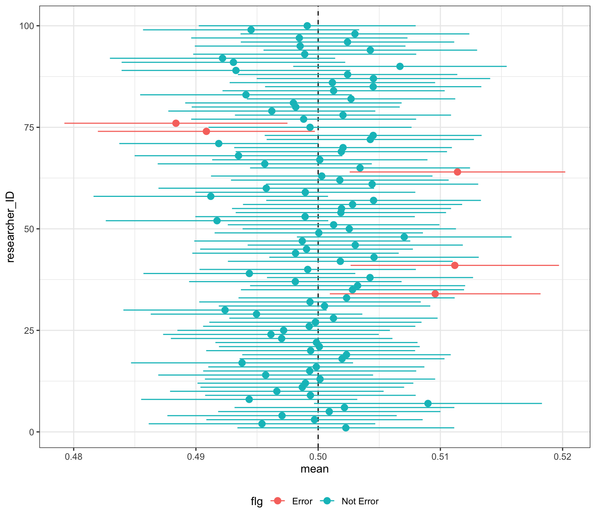
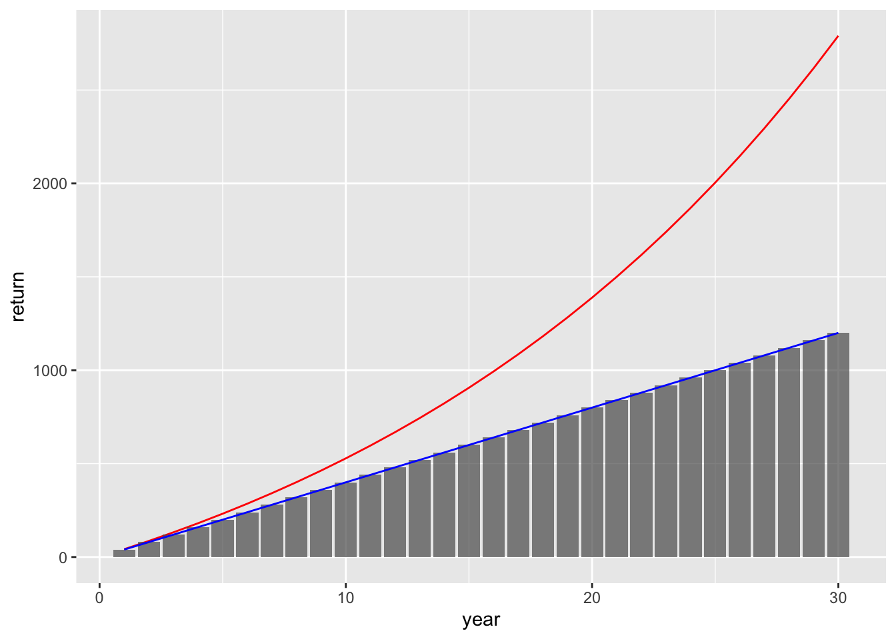
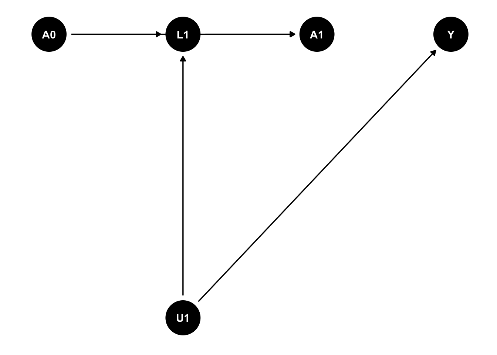
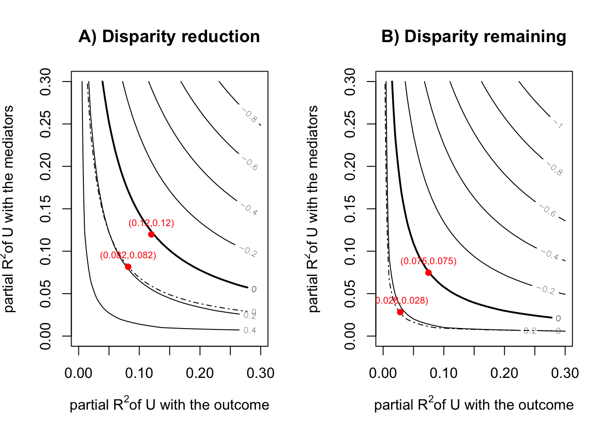
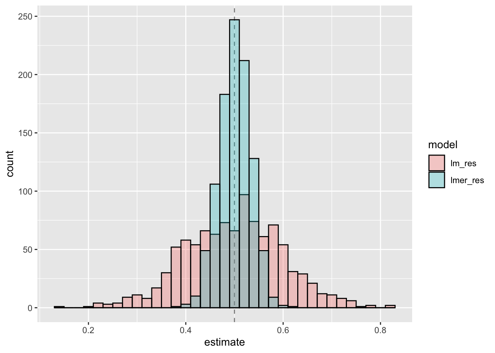

data |> filter(countryid == 'Japan') |> select(agegroup, sweight, matches('(literacy|jackweight)')) |> pivot_longer( cols = matches('(literacy)'), names_to…

reticulate

ltmle

library(tidyverse) library(cfdecomp) library(gapclosing) library(causal.decomp) d <- sMIDUS |> transmute(Y = health |> as.numeric(), # outcome T = edu …

glm(family = binomial('logit'))